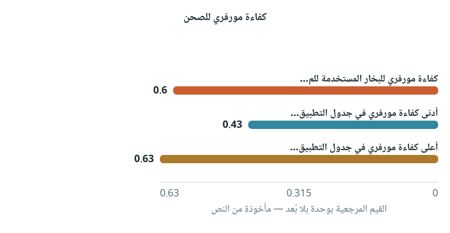

كفاءة مورفري للصحن
Murphree efficiency
نسبة التغيّر الفعلي في تركيب البخار على صحن واحد إلى التغيّر الذي كان سيحدث لو خرج البخار متزنًا مع السائل الخارج.
كفاءة مورفري للصحن مقياس لكمال الفصل على صحن تقطير واحد، عرّفه إ. ف. مورفري سنة 1925. تُعرَّف كفاءة الجانب البخاري بأنها نسبة التغيّر الفعلي في تركيب البخار على الصحن إلى التغيّر الذي كان سيحدث لو خرج البخار في اتزان تام مع السائل الخارج من الصحن نفسه: E_MV = (y_n − y_n+1)/(y*_n − y_n+1)، حيث y_n تركيب البخار الخارج من الصحن، وy_n+1 تركيب البخار الداخل إليه، وy*_n التركيب المتزن مع السائل الخارج. وتُعرَّف كفاءة الجانب السائل بالطريقة نفسها على تراكيب السائل. والكفاءة أقل من الواحد في الحالة العادية، لكنها قد تتجاوز الواحد في أبراج كبيرة القطر حين يختلف تركيب السائل أو البخار الخارج عن الصحن عن تركيب التيار الذي يصل الصحن التالي. وتُستخدم الكفاءة لربط عدد الأطباق النظرية بعدد الأطباق الحقيقية في المحاكاة والتصميم. وهي ليست ثابتة على طول البرج ولا بين مكوّنات المخلوط نفسه، وتُفصل عن كفاءة البرج الكلية التي تُعرَّف كنسبة عدد الأطباق النظرية إلى عدد الأطباق الفعلية.
كيف تعمل الظاهرة؟
الآلية مقارنة بين تغيّرين على الصحن نفسه. البخار يدخل الصحن بتركيب y_n+1 ويخرج بتركيب y_n، فالتغيّر الفعلي هو y_n − y_n+1. وأقصى تغيّر ممكن يحدث لو خرج البخار متزنًا تمامًا مع السائل الخارج من الصحن، فيكون تركيب الخروج y*_n، وأقصى تغيّر هو y*_n − y_n+1. نسبة الاثنين هي الكفاءة. وإذا كان الاتزان تامًا تساوت النسبتان وصارت الكفاءة واحدًا؛ وإذا كان الانتقال محدودًا بزمن التلامس ومساحة التلامس ومعامل الانتقال، خرج البخار أقل من الاتزان فصارت الكفاءة أقل من الواحد. وتُترجم الكفاءة إلى عدد أطباق فعلية بقسمة عدد الأطباق النظرية على كفاءة متوسطة.
العلاقة بالأرقام
E_MV = (y_n − y_n+1)/(y*_n − y_n+1)، وهي كمية بلا بُعد. وفي تطبيق التجفيف المنشور استُخدمت E_V = 0.60 للماء، وتراوحت قيم المطابقة بين 0.43 و0.63. وكفاءة البرج الكلية E_o = N_theoretical / N_actual، حيث N_theoretical من مكيب-ثيل أو من فينسكي-أندروود-جيليلاند. والعلاقة بين الكفاءة النقطية وكفاءة الصحن تحتاج نموذجًا لأنماط خلط السائل والبخار، لأن الصحن ليس مخلوطًا تامًا في الأبراج الكبيرة.
مفاهيم متقاربة
التمييز الأول: كفاءة الصحن مقابل الكفاءة النقطية؛ النقطية تُقاس عند موضع على الصحن وتأخذ التركيب الموضعي، وكفاءة الصحن تأخذ متوسط التيار الخارج، والأولى عادة أقل من الثانية بسبب الجريان المتصالب. التمييز الثاني: كفاءة مورفري مقابل كفاءة البرج الكلية؛ الأولى لكل صحن والثانية للبرج. التمييز الثالث: الكفاءة «الجافة» تصف انتقال الكتلة وحده، أما الكفاءة «المبللة» فتضم أثر الحمل بالرشح والبكاء. التمييز الرابع: الكفاءة ليست ثابتة على طول البرج ولا بين المكوّنات على الصحن نفسه.
حدود التطبيق
التعريف يفترض خلطًا تامًا للبخار الداخل، وهو ما لا يتحقق في الأبراج كبيرة القطر حيث لا تكفي المسافة بين الأطباق لخلط البخار. وقد بيّن هولاند وماكماهون أن الكفاءات المبنية على الطور البخاري قد تأخذ قيمًا في كامل مجال الأعداد الحقيقية، وأنها قد تعبّر عن انحراف نموذج الصحن لا عن درجة إتمام انتقال الكتلة. ولهذا قد تتجاوز الكفاءة الواحد في أبراج كبيرة القطر. والتعريفان صالحان للمخاليط الثنائية، وتُستخدم للمتعددة بمقاربة شبه ثنائية. ولا تُستنتج الكفاءة من الرسم وحده: تحتاج بيانات انتقال كتلة أو هيدروليكا مناسبة.

| الكمية | القيمة | المصدر |
|---|---|---|
| سنة نشر تعريف كفاءة الصحن | 1925 سنة | [1] |
| كفاءة مورفري للبخار المستخدمة للماء في تطبيق التجفيف | 0.60 بلا بُعد | [2] |
| أدنى كفاءة مورفري في جدول التطبيق المنشور | 0.43 بلا بُعد | [2] |
| أعلى كفاءة مورفري في جدول التطبيق المنشور | 0.63 بلا بُعد | [2] |
| تعريف كفاءة البرج الكلية | عدد الأطباق المتزنة ÷ عدد الأطباق الفعلية بلا بُعد | [3] |
المصادر
- 1 Rectifying Column Calculations — Industrial & Engineering Chemistry (ACS) (1925). pubs.acs.org/iechad/article/17/7/747/1050843/Rectifying-Column-Calculations · اطُّلع عليه 2026-11-28
- 2 A Simple Application of Murphree Tray Efficiency to Separation Processes — Taylor & Francis — Chemical Engineering Communications (1997). www.bre.com/PDF/A-Simple-Application-of-Murphree-Tray-Efficiency-to-Separation-Processes.pdf · اطُّلع عليه 2026-11-28
- 3 Assessment of separation efficiency modeling and visualization approaches pertaining to flow and mixing patterns on distillation trays — Elsevier — Chemical Engineering Science (2018). www.hzdr.de/publications/PublDoc-15259.pdf · اطُّلع عليه 2026-11-28
استشهد بهذا المصطلح
الصيغتان مبنيتان من بيانات الصفحة نفسها: العنوان والتاريخ ورابط النسخة المنشورة.
كفاءة مورفري للصحن — Murphree efficiency. (2026). ديوان المعرفة — انفراد. https://infiradev.com/diwan/terms/term-murphree-efficiency.html
@misc{term-murphree-efficiency2026,
title = {كفاءة مورفري للصحن},
titleaddon = {Murphree efficiency},
howpublished = {{ديوان المعرفة — انفراد} — مرجع علمي عربي},
year = {2026},
url = {https://infiradev.com/diwan/terms/term-murphree-efficiency.html},
urldate = {2026-11-28},
note = {مراجعة علمية: Abdullah Al-Huwaidi}
}
راجعه: Abdullah Al-Huwaidi · 2026-11-28 · آخر تحديث 2026-11-28